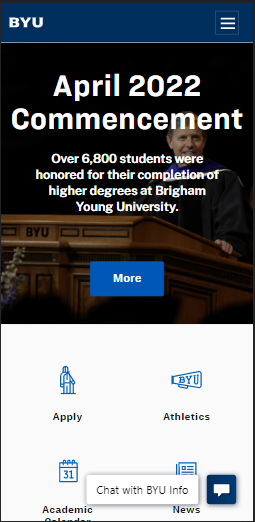

Hick's Law
Mr Delivery Food
mrdfood.comIn this image we learn of Hick's Law by given choices of funcions on Mr D Food website. This is one of the design that I will use on my designs so that I can help the user with in making a simple choice on my site.
White Space & Clean Design
Brigham Young University
Brigham Young University Brigham Young University presents the power of white space so beautifully. It brings out the clean design of the site and combine with other design principles. It brings balance on the design, shows the organization of the content and brings the visual quality of the website.
Visual Hierarchy
Netflix
NetflixBy looking at the netflix's website, one will know that they offer movie streaming services. In front of their page has functions that calls you to action immediately. They are well arranged, the contrast is clear and attractive.